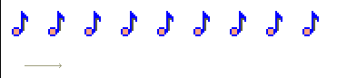
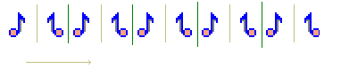
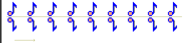
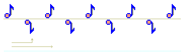
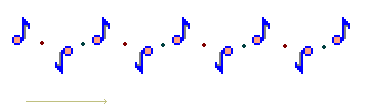
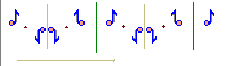
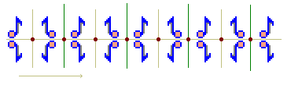

Frise
On appelle frise la figure obtenue en répétant un motif de base par des applications successives d'une même translation.
Le groupe de la frise est l'ensemble des transformations du plan qui laissent la frise invariante. Dans ce groupe de la frise, il y a déjà tous les itérés de la translation. Mais il peut y en avoir d'autres : prenez le dessin ci-dessous :  En plus de la famille de translations, il y a aussi deux familles de symétries axiales qui conserve la frise.
Étonnamment, il a été prouvé qu'il n'existe que 7 familles de frises (ou encore, 7 groupes de frise à isomorphisme près) :
- Une famille de translations conserve la frise.
- Une famille de translations et une symétrie axiale conservent la frise. 
- Une famille de translations et une famille de glissages conservent la frise. 
- Une famille de translations et deux familles de symétries axiales conservent la frise.
- Une famille de translations et deux familles de demi-tours conservent la frise. 
- Une famille de translations, deux familles de symétries axiales et une famille de demi-tours conservent la frise. 
- Une famille de translations, deux familles de symétries axiales et deux familles de demi-tours conservent la frise. 
Vous vous sentez l'âme d'un artiste? Le programme suivant va vous permettre de dessiner votre propre frise! Dessinez en haut votre motif avec les couleurs proposées, puis choisissez le type de frise...
 Le fait qu'il n'existe que 7 familles de frise est quelque chose de difficile à prouver.
Il semble que la première démonstration date de 1926, donnée par Niggli. Parmi les références sur ce sujet, citons
Mathématiques générales pour l'Agrégation, de Paul Tauvel (ardu, mais avec une preuve complète),
Le monde des pavages, aux éditions du Kangourou, par A.Deledicq et R.Raba (bonne vulgarisation),
et Transformation Geometry, de G.Martin (en Anglais, une référence!).
Le fait qu'il n'existe que 7 familles de frise est quelque chose de difficile à prouver.
Il semble que la première démonstration date de 1926, donnée par Niggli. Parmi les références sur ce sujet, citons
Mathématiques générales pour l'Agrégation, de Paul Tauvel (ardu, mais avec une preuve complète),
Le monde des pavages, aux éditions du Kangourou, par A.Deledicq et R.Raba (bonne vulgarisation),
et Transformation Geometry, de G.Martin (en Anglais, une référence!).